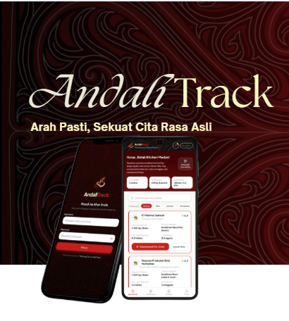

Agrotech & Supply Chain
AndaliTrack Marketplace & Traceability
Solusi rantai pasok dan platform digital terintegrasi untuk komoditas rempah andaliman di kawasan Danau Toba. Menghubungkan petani lokal dengan pembeli skala industri lengkap dengan pelacakan panen.
ICT Business Model
Pitch Deck
Figma UI